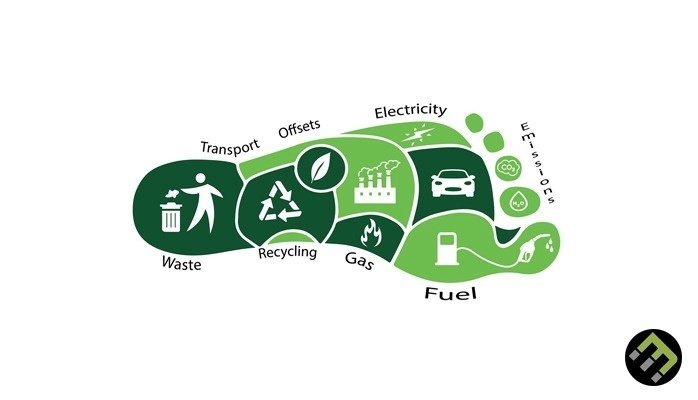
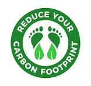

Sustainability Insights Dashboard
Carbon Footprint on Vehicles
Carbon Footprint in Household 
Recycling Efficiency Management of materials
Recycling Efficiency Management
Sustainability
Tips & Facts